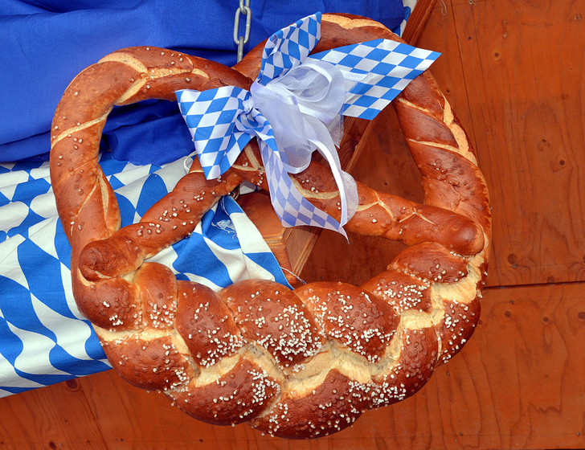
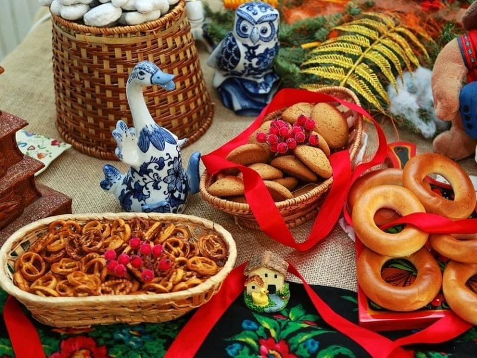

Я тут долго думала, какую тему взять для сайта...
Долго думала: животные, родственники, друзья, а может глобальное потепление...
и тут я заметила, что на кухне вскипел чайник и подумала:"А с чем бы чайку попить?"
и вместе с ответом на этот вопрос пришла в голову тема для сайта
Итак, мы сегодня поговорим о...

КРЕНДЕЛЯХ УРАААА
я люблю крендели, а вы?
их вообще возможно не любить?
Мы сегодня обсудим:
- Историю кренделей
- Пословицы про крендель
- Основные виды кренделей
- Один из рецептов кренделей
Начнем с истории
Когда кто-то заговаривает об истории кренделей, мы сразу думаем о брецелях и далекой Баварии.
Но, на удивление, идею создания брецелей приписывают итальянским, а вовсе не немецким монахам. Они придумали сдобу, чтобы побаловать детей, выучивших наизусть нужные молитвы.
Первоначально угощение так и назвали - pretiola, что переводится как "маленькая награда"

Известное нам название произошло от Brezitella или Brachiatellium, что на старонемецком и латыни значит "руки"
Еще одна теория указывает на латинское Bracellus, что значит "браслет"
Ну а в русском языке про крендель существует несколько пословиц
Ах ты, крендель с маком! - про того, кто изображает что-то сложное, замысловатое.
Выделывать/выписывать ногами кренделя - идти шатаясь, заплетающейся походкой (о пьяном).
Выкидывать кренделя/крендели - танцуя, выделывать замысловатые фигуры.

Существует множество видов кренделей
Вот основные из них:
- Сливочные крендели
- Крендели с орехами
- Крендели с пряностями
- Бургундский крендели
- Крендели с начинкой
- Крендели еврейские
Разумеется, каждый готовит по-своему и существует бесчисленное множество рецептов,
но я все-таки приведу здесь один из них
Сахарные крендельки с корицей
- мука - 350г
- сахар - 125г
- соль - 1/2 ч. л.
- пекарский порошок - 1 ч. л.
- сливочное масло - 100г
- сметана - 80г (2 ст. л.)
- яйцо - 1 шт.
- мед - 1 ст. л.
- корица (для посыпки крендельков) - около 1 ст. л.
Рецепт приготовления:
- Смешать все сухие ингреиенты и отдельно все жидкие.
- Замесить тесто, смешав быстро сухое и мокрое. Поставить отдохнуть на полчаса.
- Раскатывать жгутики.
- И формовать из них крендельки.
- Посыпать корицей.
- И выпекать, пока они не подрумяняться.
А здесь можно найти больше рецептов
Приятного аппетита